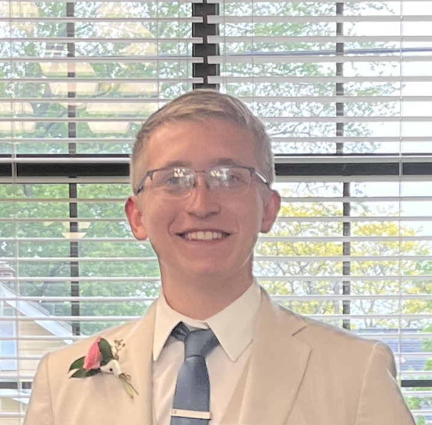

Kyle Fink
Explore

My name is Kyle Fink, welcome to my website! I'm a student at Grand Valley State University on my 5th year studying Computer Science.
I grew up in a small town called Bear Lake where we had very little oppertunities growing up to experiance things many others woul dhave.
In high school, I was part of the National Honor Society, the National Technical Honor Society, and Achieved my Eagle Scout through the
Boy Scouts of America, troop 106, in 2019. I also participated in numerous yearsof sports for our highschool including Cross Country, Golf,
Basketball, Football, and I was on the high school First Robotics team. I was very active in the community, doing things with the Boy Scouts
and helping with selling tickets at ball games, helping run concession stands for ball games, and setting up/cleaning up after events at the school
C# was my first exposure to the world of coding. I took an intro to C# class at a small college called Northwestern Michigan College in Traverse City, Michigan. There my professor John Velis really sold coding and made it fun, fun enough that I would later make Computer science my major.
My first ever class was in the language of C#. While learning C# I made larger and larger projects as required from the class with some free range to pick what projects we wanted to work on. I opted to make a small ATM for my first project. This ATM had a way to make an account and password and would require you to login in order to withdraw or deposit any hypothetical money.
Later on when I took the more experianced C# class or projects got larger and more complex. During that semester we got the oppertunity to code with "Finch" robots. These robots had many different sensors on them to monitor the world around them. Along with those they also had the ability to make noise and move aroud form two small wheels. Our final project for the second C# class was to make a text based quest game. My game was based around the Star Wars franchise where it prompted the player to enter their name, age, what race from star wars they would like to be called, and what side of the force they wuld like to choose. The inital game woul dload where the player could move from planet to planet, interact with NPCs fight bad NPCs, and collect parts for a lightsaber along wiith some other items to aid them along their journy.
When I transfered colleges to Grand Valley State Univerity the first classes I had to take were intro classes for the Java language. Because C# is very smilar to Java, this transition was pretty simple. In the more experianced Java class we were tasked to make a Tic Tac Toe game that would prompt the player to enter what size of a board they wanted from 3x3 up to 15x15, and how many in a row they wnted to be a win. Once we got that working we were tasked to create an opponent that would attempt to block you from getting a win. Overall a very fun project and the end product was semi hard to beat the CPU which made it all worth while.